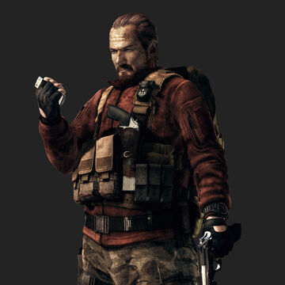
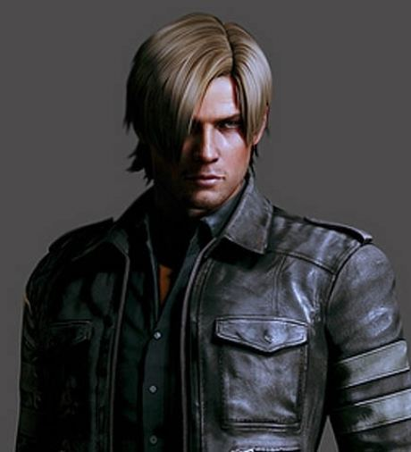
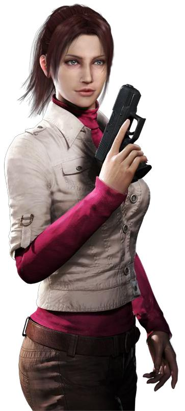

Resident Evil

Nome: Chris Redfield
Data de Nascimento: 1973
Gênero: Masculino
Altura: 1,85m
Peso: 98 kg
R/N: Caucasiano/Americano
Ocupação Atual: Capitão do
Esquadrão Lobo de Caça Não se sabe muito sobre a infância de Redfield, além de que ele e Claire Redfield foram criados em Nova Iorque após terem perdido os pais em algum momento antes de 1998, tendo apenas um ao outro como família. Ao alcançar a maior idade, Redfield ingressou na Força Aérea dos Estados Unidos, onde recebeu treinamento para pilotar aviões e helicópteros, além de treinar para usar uma ampla variedade de armas, incluindo facas, ficando principalmente conhecido por seu combate corpo-a-corpo e pontaria pelas quais chegou a ganhar um concurso. Durante esse período, ele serviu em uma unidade ao lado de Barry Burton, que se tornou seu amigo íntimo e mentor. No geral, embora seu caráter direto fosse adequado para um piloto e ele se mostrasse muito promissor na aeronáutica, Redfield mantinha fortes convicções que o colocavam em desacordo com seus oficiais seniores, culminando com ele sendo dispensado do exército em 1995, embora seja incerto se a dispensa ocorrera por sua renuncia ou por insubordinação

Nome: Jill Valentine
Data de Nascimento: 1974
Gênero: Feminino
Altura: 1,65m
Peso: 56 kg
R/N: Caucasiana/Americana (ascendência mista franco-japonesa)
Ocupação Atual: S.O.A. da B.S.A.A. Quase nada se sabe da vida pregressa de Valentine, além de que o pai dela era francês enquanto sua mãe era de descendência japonesa (uma "nikkei") e que ela fora muito rebelde em sua adolescência. No início da década de 90, Valentine serviu no exército dos Estados Unidos e chamou a atenção de recrutadores do 1º SFOD-D (1º Destacamento Operacional de Forças Especiais), conhecido como "Força Delta", a principal unidade antiterrorismo do país. Apesar de seu sexo, Valentine foi autorizada a participar do Curso de Treinamento Intensivo para Operador de seis meses, onde se destacou no descarte de bombas e no destrancamento de fechaduras, além de também ser reconhecida por seu trabalho delicado, porém preciso, resiliência, coragem e discernimento em meio ao perigo. Essa experiência fez de Valentine uma das únicas mulheres no mundo com treinamento da Força Delta. 
Nome: Barry Burton
Data de Nascimento: 1960
Gênero: Masculino
Altura: 1,86m
Peso: 89,3 kg
R/N: Caucasiano/Americano
Consultor/Especialista em Combate da B.S.A.A A carreira de Burton começou em 1983, quando ingressou na Força Aérea dos Estados Unidos, onde aprendeu a pilotar helicópteros e aeronaves. Neste período, ele serviu na mesma unidade que Chris Redfield, com ambos se tornando grandes amigos. Ao então completar seu serviço, Burton se juntou à equipe da S.W.A.T. de um determinado departamento de polícia, onde seu mentor na aplicação da lei fora Enrico Marini, que, por sua vez, virou um bom confidente seu. Durante essa época, ele se tornou especialista em armamentos, adquirindo um gosto tão grande pela área que o levou a se tornar um colecionador de armas de fogo e associar-se a N.R.A. (Associação Nacional de Rifles). Posteriormente, em meados da década de 1990, ele e sua amada esposa, Kathy, tiveram duas filhas chamadas Moira e Polly.

Nome: Leon S. Kennedy
Data de Nascimento: 1977
Gênero: Masculino
Altura: 1,80m
Peso: 80 kg
R/N: Caucasiana/Americano
Ocupação Atual:Agente-Maior e Co-fundador da D.S.O Leon Scott Kennedy é um agente americano pela D.S.O, divisão essa que ajudou a criar ao lado do Presidente dos Estados Unidos, tendo um cargo de muita confiança e respeito das altas autoridades dos Estados Unidos, tendo sido amigo do falecido Presidente Adam Benford. Antes disso, Leon serviu como policial pelo Departamento de Policia de Raccoon City(R.P.D) por apenas um dia. Ele se interessou em entrar para a policia depois de saber sobre os estranhos eventos que aconteceu em Arklay Mountains, no ano de 1996. Depois do Incidente de Raccoon City, ele recebeu uma oferta tentadora e foi instruído a prestar serviços para o governo dos Estados Unidos pela US-STRATCOM até 2011. 
Nome: Clarie Redfield
Data de Nascimento: 1979
Gênero: Feminino
Altura: 1,69m
Peso: 52,4 kg
R/N: Caucasiana/Americana
Ocupação Atual:Membro da TerraSave (2005 - Atualmente) Claire Redfield faz parte de uma organização de direitos humanos chamada TerraSave desde 2005, e a irmã mais nova de Chris Redfield e tem muito orgulho do trabalho do irmão, desde a época dos S.T.A.R.S. Ela tem personalidade forte e mesmo sendo somente uma civil, ela sabe manejar armas e lockpicks muito bem, graças às lições que aprendeu com o irmão mais velho. Claire levava uma vida perfeitamente normal, sendo uma estudante apaixonada por motocicletas, até o repentino desaparecimento de Chris. Ela decidiu ir até Raccoon City tentar descobrir o paradeiro de seu irmão e se envolveu na trágica história da cidade junto de Leon S. Kennedy. A partir daí, Claire se viu comovida com as vítimas da pesquisa ilegal e do bioterrorismo e se tornou uma ativista para combater esse tipo de atividade.

Nome: Rosemary Winters
Data de Nascimento: 2 de agosto de 2020
Gênero: Feminino
Altura:?
Peso: 52,4 kg
R/N: Caucasiano Europeu
Ocupação Atual:? Rosemary nasceu em agosto de 2020, enquanto seus pais estavam sob proteção da BSAA. Devido às mutações da família, bem como aos antigos laços de Mia com As Conexões, eles estavam em sério risco de sequestro para experimentos ou até assassinato. Embora haja evidências sugerindo que eles foram movidos repetidamente, até 2021 eles estavam vivendo no leste europeu. Neste ponto, a existência de Rosemary foi vazada por meios não especificados, seja através da BSAA ou das Conexões. Quando Miranda, uma sacerdotisa de uma aldeia próxima, obteve essa informação, ela sequestrou Mia e assimilou seu DNA para assumir sua aparência. Quando essa assimilação ocorreu é incerto, embora a BSAA tenha obtido provas da trama até segunda-feira, 8 de fevereiro. Embora o ataque tenha sido inicialmente um sucesso, Miranda forjou sua morte e foi capaz de roubar Rosemary enquanto os dois estavam sendo transportados.